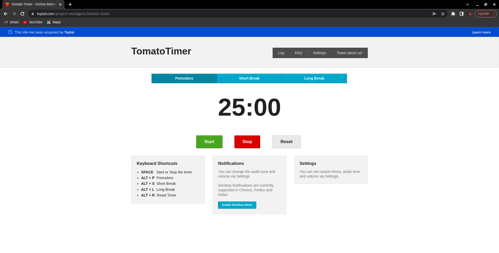

Tomato Timer
Features
- The name of the timer boldly written at the top in the nav bar
- The nav bar also contains Log, FAQ, Settings and Tweet about us
- Just below the Nav bar there are three buttons: Pomodoro, Short Break and Long Break
- when clicked on each of the button, the timer automatically starts with 25min, 5min and 10min respectively
- The timer is just below the buttons, with a start, stop and Reset button below it with green, red and white colors respectively.
- At the end of each Pomodoro there is a notification sound
- The web app also have three cards at the bottom with a list of Keyboard Shortcuts, how to change notifications and settings

Link to the TomatoTimer
NEXT